Czym jest Strażnik
Serwer zbiera dane z kilku publicznych źródeł, liczy punktację dla każdego województwa i wysyła powiadomienia. Aplikacja pokazuje mapę, źródła każdego punktu i historię ostatnich 12 godzin. Nie potrzebujesz konta ani własnego serwera.
Wynik jest wskaźnikiem aplikacji, a nie prawdopodobieństwem uderzenia. Żaden pojedynczy artykuł ani strefa nie podniesie poziomu sam — próg osiąga dopiero oficjalny komunikat, poważny obiekt blisko granicy albo kilka niezależnych źródeł naraz.
1. Instalacja i aktualizacje
- iPhone: pobierz Strażnika z App Store i przeczytaj instrukcję dla iPhone'a — poniższe kroki dotyczą tylko Androida.
- Android — najprościej: zainstaluj Strażnika z Google Play (Polska i pozostałe kraje Europy). Aktualizacje przychodzą wtedy przez sklep, a kolejne kroki z tej listy możesz pominąć — zostaje tylko ostatni.
- Bez Google Play: pobierz najnowszy Straznik.apk na telefon z Androidem.
- Otwórz plik z folderu Pobrane. Jeśli Android poprosi, zezwól przeglądarce lub menedżerowi plików na instalowanie aplikacji z tego źródła.
- Zatwierdź instalację i uruchom Strażnika. Pozwól systemowi przeskanować plik — nie wyłączaj Play Protect.
- Zezwól na powiadomienia i zapisz swoje województwo w Menu → Ustawienia → Moje miejsca.
Zgoda „Instalowanie nieznanych aplikacji” — i jak ją cofnąć
Masz już Strażnika z pliku APK? Możesz zainstalować wersję z Google Play na istniejącą — obie są podpisane tym samym kluczem, więc ustawienia i Moje miejsca zostają.
Przy instalacji z pliku APK Android pozwoli go zainstalować dopiero wtedy, gdy aplikacja otwierająca plik — zwykle Chrome — dostanie uprawnienie Instalowanie nieznanych aplikacji. Przeglądarka przerywa wtedy instalację i przenosi Cię do przełącznika Zezwalaj z tego źródła. To normalny krok, nie błąd.
Uprawnienie dotyczy tylko tej jednej aplikacji, ale zostaje włączone, dopóki go nie wyłączysz. Dlatego po instalacji warto je cofnąć:
- Ustawienia → Aplikacje → Specjalny dostęp do aplikacji → Instalowanie nieznanych aplikacji.
- Wybierz aplikację, którą otwierałeś plik (zwykle Chrome, oznaczoną „Dozwolone”).
- Wyłącz Zezwalaj z tego źródła.
Szybciej: w Ustawieniach wpisz w wyszukiwarce nieznanych. Nazwy pozycji różnią się nieco między wersjami Androida i producentami, ale ścieżka jest ta sama. Strażnik działa normalnie po cofnięciu zgody; przy następnej aktualizacji Android poprosi o nią ponownie.
Jeśli aplikacja GitHuba przechwytuje link i pobieranie staje, otwórz link w przeglądarce. Jest też kopia APK w repozytorium.
Aktualizacja z poziomu aplikacji
Wersję z Google Play aktualizuje sklep — nie ma w niej przycisku aktualizacji. Poniższe dotyczy wersji z pliku APK.
Strażnik sprawdza nowe wydanie przy każdym uruchomieniu i przy powrocie na wierzch (nie częściej niż co 30 minut). Okno aktualizacji pokazuje numer wersji i listę zmian. Ręcznie: Menu → Ustawienia → Język, tekst i wersja → ⬆ Sprawdź aktualizacje.
Przy zwykłej aktualizacji możesz wybrać Później. Po wybraniu instalacji aplikacja pobiera plik, sprawdza jego sumę SHA-256 i przekazuje go Androidowi do zatwierdzenia. Instaluj nowe wydanie na istniejące — ustawienia i Moje miejsca zostają.

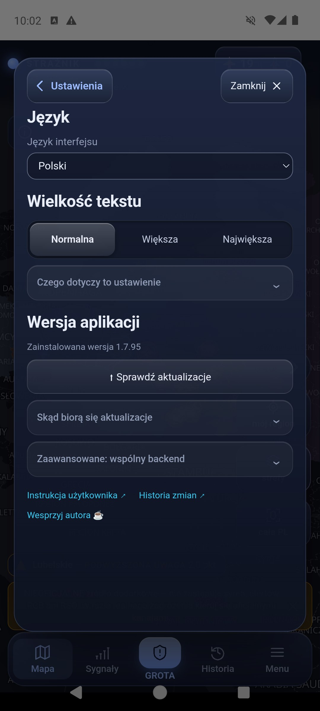
2. Pierwsze kroki: Moje miejsca, powiadomienia, język
Moje miejsca
Menu → Ustawienia → Moje miejsca → Otwórz Moje miejsca. Zapiszesz do 8 miejsc, np. Dom, Praca, Wyjazd. Dla każdego wybierasz województwo i zaznaczasz Obserwuj alerty dla tego województwa. Powiadomienia przychodzą dla obserwowanych województw; kilka miejsc w tym samym województwie daje jedną subskrypcję. Pierwsze miejsce wyznacza „mój region” na mapie.
Zakres miejsca może być dokładny: po dotknięciu ◎ Pobierz pozycję jeden raz aplikacja zapisuje jednorazowo punkt i jego dokładność. Nie ma śledzenia w tle. Przy otwartej aplikacji Strażnik policzy wtedy na telefonie odległość do widocznych obiektów. Powiadomienia i tak idą według województwa.
Dane miejsc zostają na urządzeniu — przycisk nazywa się Zapisz na urządzeniu.

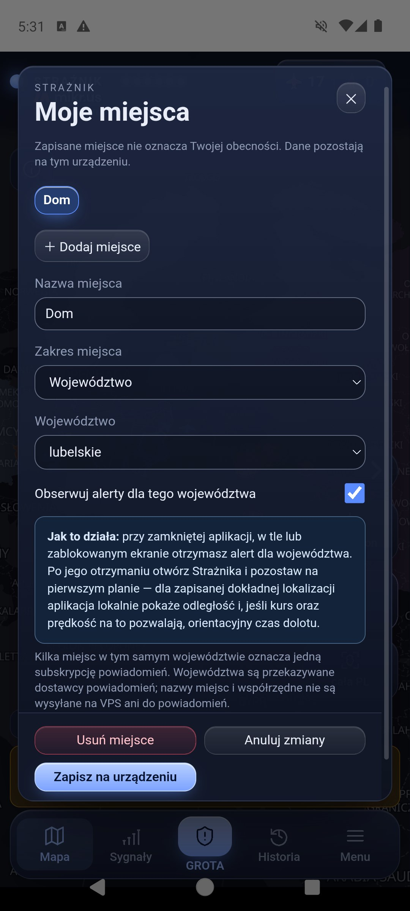

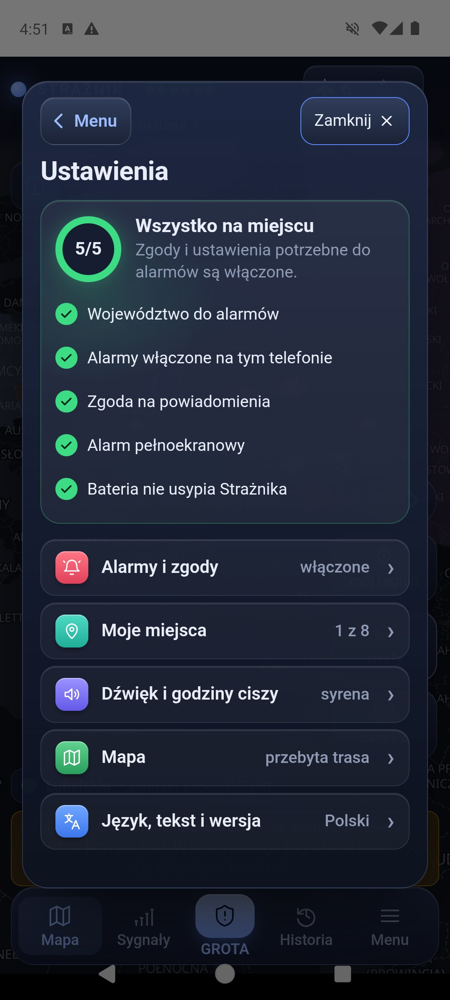

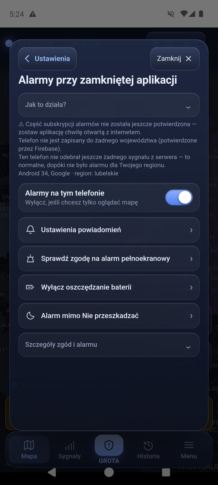

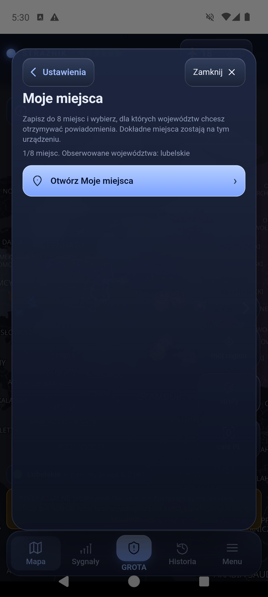

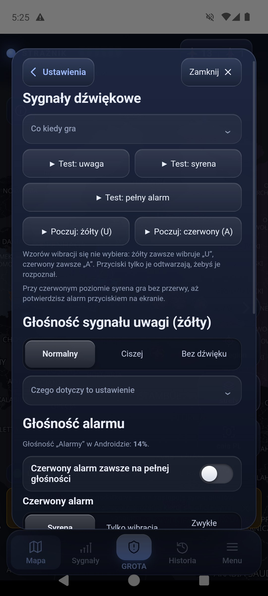

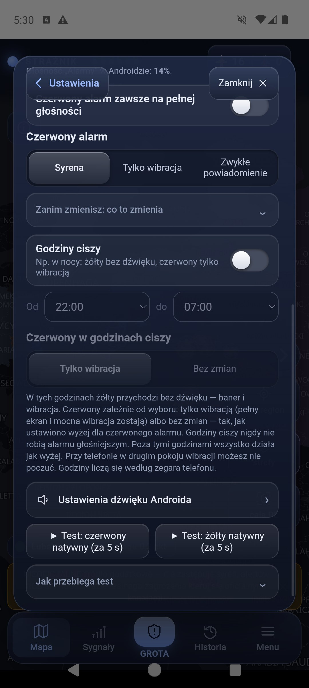

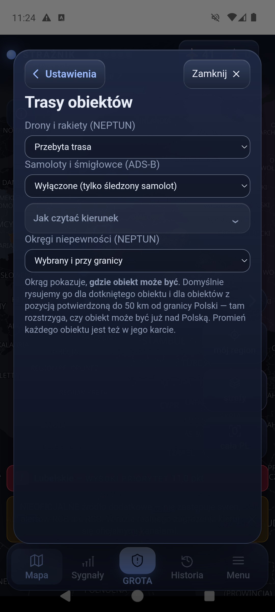
Zgody na Androidzie
W sekcji Alarmy i zgody sprawdzisz, czy powiadomienia są gotowe i dla jakiego regionu. Jeśli chcesz tylko oglądać mapę, wyłącz suwak Alarmy na tym telefonie — telefon zostanie wypisany ze wszystkich województw i przestanie dostawać powiadomienia o alarmach oraz przypomnienia o zgodach. Status nad suwakiem pokazuje, do ilu województw telefon jest zapisany (potwierdzone przez Firebase). Zgody Androida zostają bez zmian — aplikacja nie może ich zmienić. Ostrzeżenie o zgodach na mapie zamkniesz też krzyżykiem. Przyciski prowadzą wprost do ustawień systemu: Ustawienia powiadomień, Sprawdź zgodę na alarm pełnoekranowy i Wyłącz oszczędzanie baterii. Android 14 i nowszy potrafi cofnąć zgodę na pełny ekran po aktualizacji — sprawdź ją osobiście. Czwarty przycisk, Alarm mimo Nie przeszkadzać, widać tylko wtedy, gdy ta zgoda nie jest przyznana; jest dobrowolna i opisana niżej, przy trybie Nie przeszkadzać.
Polski / English
Menu → Ustawienia → Język, tekst i wersja → Język interfejsu. Po wyborze dotknij Zmień język i uruchom ponownie — aplikacja uruchomi się w nowym języku. Dopóki języka nie wybierzesz, aplikacja mówi w języku telefonu: polski i ukraiński bez zmian, każdy inny — po angielsku (strona WWW domyślnie po polsku). Wersja angielska obejmuje interfejs, opisy obiektów i nazwy na mapie; cytowane komunikaty i tytuły artykułów pozostają w oryginale.
Wielkość tekstu
Menu → Ustawienia → Język, tekst i wersja → Wielkość tekstu: Normalna, Większa albo Największa. Działa od razu, bez zapisywania i bez ponownego uruchamiania. Powiększa wszystkie napisy naraz — w panelu, na kartach obiektów, w legendzie, na ekranie alarmu i w module GROTA. Odstępy i przyciski zostają tej samej wielkości, żeby układ się nie rozjechał i żeby nic nie wyszło poza ekran.
Na Androidzie to ustawienie mnoży się z systemowym rozmiarem czcionki (Ustawienia → Wyświetlacz → Rozmiar czcionki), więc przy dużej czcionce w telefonie zwykle wystarcza „Normalna". Napisy na samej mapie pochodzą z serwera map i tym ustawieniem się nie zmieniają. Na stronie w przeglądarce działa też zwykłe powiększanie (Ctrl i +). Na iPhonie jest odwrotnie niż na Androidzie: systemowy rozmiar tekstu (Ustawienia → Ekran i jasność → Rozmiar tekstu) nie zmienia napisów w Strażniku — wbudowana przeglądarka systemowa idzie za Dynamic Type tylko wtedy, gdy strona wprost o to poprosi, a nasza tego nie robi. Na iPhonie to ustawienie jest więc jedyną drogą do większego tekstu.
3. Ekran główny
Układ ma pięć stref: pasek u góry z diodami źródeł i licznikiem, znak (i) w lewym górnym rogu mapy, kafelki przy prawej krawędzi mapy, baner mojego regionu i pływający dolny pasek.
| Element | Co robi |
|---|---|
| STRAŻNIK i sześć diod | Diody to źródła: NEPTUN, Alarmy UA, ADS-B, RSS, RCB/RSO, PAŻP. Zielona — źródło odpowiada, czerwona — nie odpowiada. Dioda RCB/RSO pokazuje Regionalny System Ostrzegania, z którego przychodzą oficjalne Alerty RCB; jest zielona tylko wtedy, gdy RSO odpowiedziało w ostatnich minutach. Dotknięcie diod otwiera opis źródeł, a dotknięcie nazwy — okno „O aplikacji”. Zielona dioda oznacza działające źródło, a nie brak zagrożenia. |
| Licznik dronów i rakiet | Ile dronów (także Shahedy i drony rozpoznawcze) i ile rakiet (manewrujące, balistyczne i bomby KAB) jest teraz na mapie — dokładnie tyle, ile ikon. Bez FPV, MiG-31K i obiektów nieokreślonych; zero jest przygaszone. Liczba potrafi nagle spaść o połowę: źródło usuwa obiekty całymi paczkami po kilku minutach bez potwierdzenia, więc spadek nie musi oznaczać końca ataku. Dotknięcie otwiera wyjaśnienie. Licznik nie jest ostrzeżeniem dla województwa — o tym mówią punkty i powiadomienia. W historii pokazuje chwilę wybraną suwakiem. |
| Znak (i) na mapie | Okienko Źródła mapy: skąd są obiekty (NEPTUN, ADS-B) i podkład (OpenFreeMap © OpenMapTiles © OpenStreetMap). Przy starcie otwiera się samo i zwija po kilku sekundach albo po dotknięciu mapy. |
| mój region | Kadruje mapę na pierwszym zapisanym miejscu. |
| strefy | Włącza i wyłącza warstwę stref PAŻP. Przygaszony kafelek — warstwa wyłączona. |
| cała PL | Pokazuje Polskę razem z Ukrainą. |
| Baner nad dolnym paskiem | Twój region, jego poziom i punkty, np. „Lubelskie — poniżej progu 1,1 pkt”. Dotknięcie otwiera kartę województwa. |
| Dolny pasek: Mapa Sygnały GROTA Historia Menu | Mapa wraca do widoku głównego; Sygnały otwiera panel; GROTA — najbliższe miejsca schronienia (tylko w aplikacji, rozdział 9); Historia przewija 12 godzin; Menu otwiera listę opisaną niżej. |
| Menu | Ustawienia (Alarmy i zgody, Moje miejsca, Dźwięk i godziny ciszy, Mapa, Język, tekst i wersja), Powiadomienia (w aplikacji — włączenie lub wyciszenie, na stronie WWW — powiadomienia w przeglądarce, rozdział 10), Legenda symboli i kolorów, Widok 3D (wysokość bryły województwa rośnie z liczbą punktów — także poniżej progu), Obce maszyny (RU/BY) (rozdział 8), O aplikacji i punktacja, Instrukcja użytkownika i Wesprzyj autora (tego ostatniego nie ma w wersji z Google Play). |
Ustawienia zaczynają się od karty gotowości — czy alarm do Ciebie dotrze i czego jeszcze brakuje — a pod nią jest pięć sekcji. Większość zmian zapisuje się od razu, bez przycisków „Zapisz” i „Anuluj”; tylko język i adres własnego serwera wymagają ponownego uruchomienia przyciskiem w swojej sekcji, a edytor Moich miejsc ma własny przycisk Zapisz na urządzeniu. Każde okno otwarte z Menu — Ustawienia, O aplikacji, Obce maszyny, Legenda — ma na górze, obok „Zamknij”, przycisk ‹ Menu, który wraca do Menu; tak samo działa systemowe „wstecz” na starcie Ustawień. Sekcje Ustawień i okno Moich miejsc mają na górze ‹ Ustawienia. Przy dużym tekście przycisk stoi tuż pod „Zamknij”.
Przy starcie na dole pojawia się pasek „NIEOFICJALNE źródło dodatkowe…”. Możesz go zamknąć krzyżykiem — wraca przy alarmie. Panele i okna zamkniesz krzyżykiem, zakładką Mapa albo dotknięciem obok. Gdy otwierasz panel Sygnały albo historię, mapa przesuwa się nad odsłoniętą część ekranu, żeby obiekty nie chowały się pod panelem, a po zamknięciu wraca na miejsce.

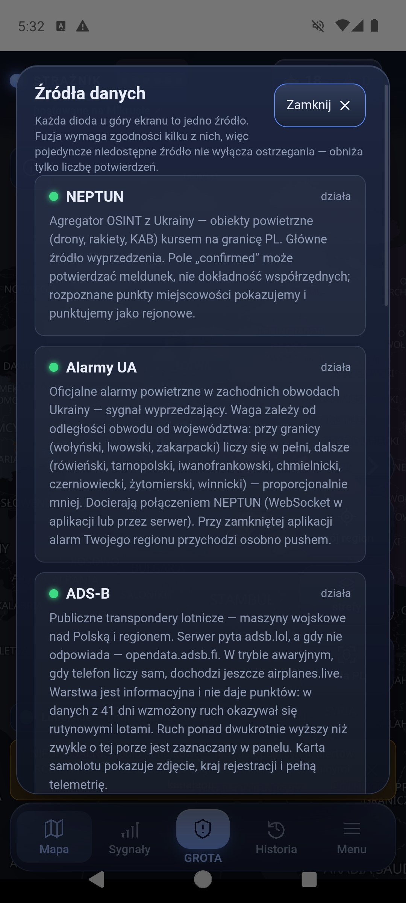

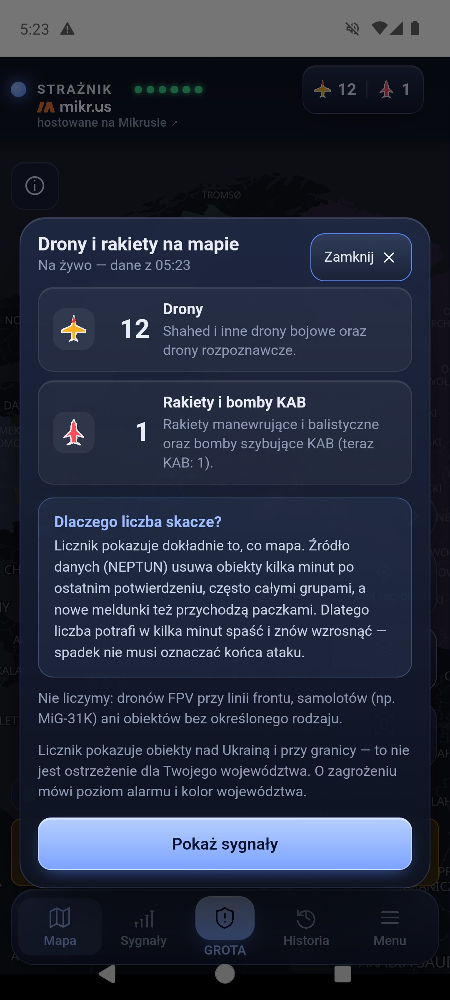

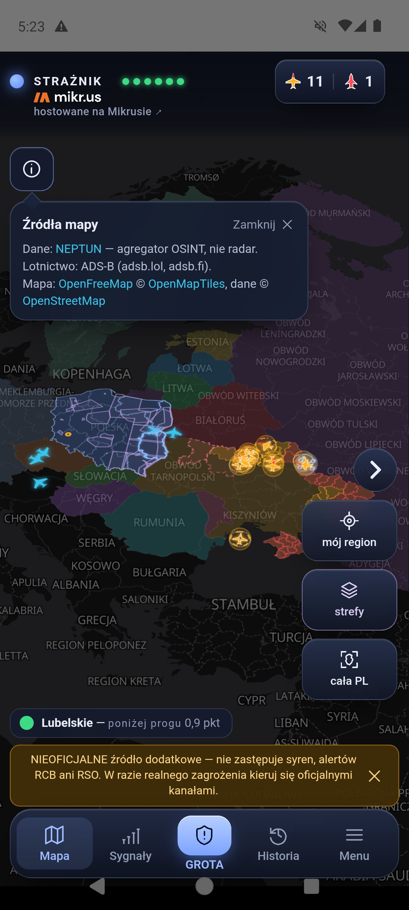

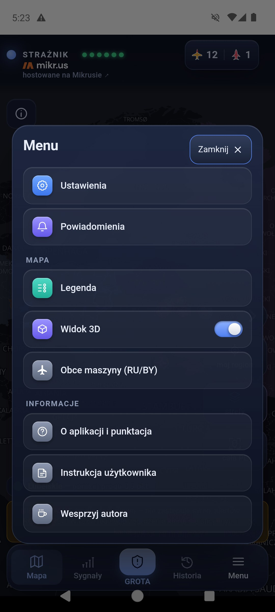

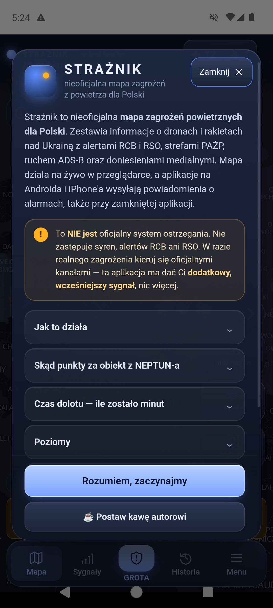
4. Mapa, obiekty i samoloty
Przesuwaj mapę palcem, powiększaj dwoma palcami i dotykaj obiektów. Kolor województwa pokazuje punkty z ostatnich 60 minut:
| Kolor | Znaczenie |
|---|---|
| granatowy | 0–1,9 pkt — spokojnie (poniżej progu) |
| żółty | od 2 pkt — podwyższona uwaga |
| czerwony | od 4 pkt i potwierdzenie — wysoki priorytet (rozdział 11) |
| przygaszony, oliwkowy | kolor wyłącznie od sąsiednich województw; karta ma kreskowaną ramkę i napis „podniesione przez sąsiedztwo · bez alarmu”. Taki kolor nie wysyła powiadomienia. |
Obiekty z NEPTUN-a nad Ukrainą mają osobne kształty — legenda pokazuje każdy z nich:
| Obiekt | Symbol |
|---|---|
| Dron / BpSP | żółta sylwetka z prostymi skrzydłami i wciętym ogonem; czerwony dziób i czerwony grot przed nim wskazują kierunek lotu |
| Dron Shahed | pomarańczowe skrzydło delta |
| Dron FPV | cztery wirniki; lokalny, bez punktów |
| Dron rozpoznawczy | biało-szara sylwetka z długimi skrzydłami |
| Rakieta manewrująca | czerwony korpus ze skrzydłami |
| Rakieta balistyczna | różowy smukły grot |
| Bomba kierowana KAB | żółta sylwetka bomby |
| MiG-31K (nosiciel) | fioletowy samolot |
| Obiekt nierozpoznany | szary romb ze znakiem zapytania |
Kurs nieznany: ikona nie jest obracana, ma przerywaną białą obwódkę i znak zapytania — nie wskazuje kierunku. Pulsujący czerwony pierścień mają tylko obiekty, które w tej chwili dodają punkty któremuś województwu; pozostałe stoją spokojnie.
Pozycja niepewna: dron, którego położenie pochodzi z meldunku „w kierunku …” albo ze środka miejscowości, a nie z namiaru, ma ten sam kolor typu, ale przygaszone wypełnienie i przerywany kontur. Takie obiekty ważą w punktach 60% pewnych (środek miejscowości 50%). 19 października wokół Lwowa 11 z 16 tropów było właśnie takimi meldunkami — kilka ikon obok siebie to często jeden obiekt opisany przez kilka kanałów.
Różowo podświetlony obwód Ukrainy z przerywanym konturem ma alarm powietrzny, który w tej chwili daje punkty któremuś województwu. Bliższe obwody są wyraźniejsze, dalekie ledwo widoczne. Dotknięcie obwodu pokazuje, kiedy przyszedł sygnał i ile punktów daje któremu województwu.
Okrąg wokół obiektu pokazuje, gdzie obiekt może być — a nie zasięg rażenia. Domyślnie okrąg ma tylko obiekt dotknięty i obiekty z pozycją potwierdzoną do 50 km od granicy Polski — tam rozstrzyga, czy obiekt może być już nad Polską; dalej i przy pozycji niepewnej zlewał się z innymi w jedną plamę. W Menu → Ustawienia → Mapa → „Okręgi niepewności” wybierzesz Wybrany i przy granicy, Wszystkie albo Wyłączone; promień każdego obiektu jest też w jego karcie. Po dotknięciu obiektu jego okrąg jest wyraźny i grubszy, a okręgi pozostałych obiektów bledną — przy kilku dronach obok siebie widać, który okrąg do którego należy. Składa się z niepewności samego zgłoszenia i drogi, jaką obiekt mógł przelecieć od ostatniego meldunku, więc rośnie, dopóki nie przyjdzie nowy meldunek — najwyżej przez 15 minut, potem przestaje rosnąć, a karta obiektu o tym uprzedza. Karta rozbija tę liczbę na obie części. Rakiety, KAB i balistyka mają stały rejon, bo źródło nie podaje im kursu. Przerywana linia to trasa przelotu — rysowana tylko wtedy, gdy źródło podaje pozycje nadające się do śledzenia. W Menu → Ustawienia → Mapa → „Trasy obiektów” wybierzesz osobno dla dronów i rakiet oraz dla samolotów: wyłączone, przebyta trasa albo trasa i kierunek lotu (linia na 30 minut lotu drona lub rakiety, 15 minut samolotu, z kropkami co 5 minut). Kierunek dronów i rakiet rysujemy tylko przy kursie zmierzonym z ruchu obiektu. Obiekt z pozycją przybliżoną (duże koło niepewności) nie ma ani trasy, ani kierunku — a większość obiektów NEPTUN stoi w miejscu między odczytami, więc linie widać tylko przy części z nich. Niebieskie samoloty i śmigłowce to lotnictwo wojskowe z jawnym transponderem ADS-B. Obiekt, którego pozycję źródło wyznaczyło z celu i kursu, a nie z obserwacji, ma okrąg co najmniej 40 km, a karta pisze, że może być w dowolnym miejscu trasy. Okrąg rośnie tak samo w podglądzie historii — od wieku meldunku w wybranej chwili.
Czas pod ikoną (np. „7 min”) to wiek ostatniego meldunku o tym obiekcie. NEPTUN to zgłoszenia ludzi, nie radar: obiekt stoi w tym samym miejscu, dopóki ktoś nie zgłosi go ponownie, a bywa, że kolejnego zgłoszenia nie ma wcale. Podpis pojawia się po pięciu minutach, a ikona stopniowo blednie — im bledsza, tym starsza informacja. Po godzinie ikona jest wyraźnie wyblakła. Nieruchome ikony nie oznaczają więc zawieszonej mapy, tylko brak nowych zgłoszeń. Kartę obiektu otwiera linia ostatni meldunek, a przy meldunku starszym niż kwadrans dopisek, że obiekt mógł się od tego czasu przemieścić.
Legendę otwiera pierwsza ikona u góry, a zamyka przycisk ✕ Zamknij w jej nagłówku. Sześć grup rozwija się pojedynczo — nazwy wszystkich widać naraz, więc nie trzeba przewijać całości, żeby znaleźć jeden symbol.

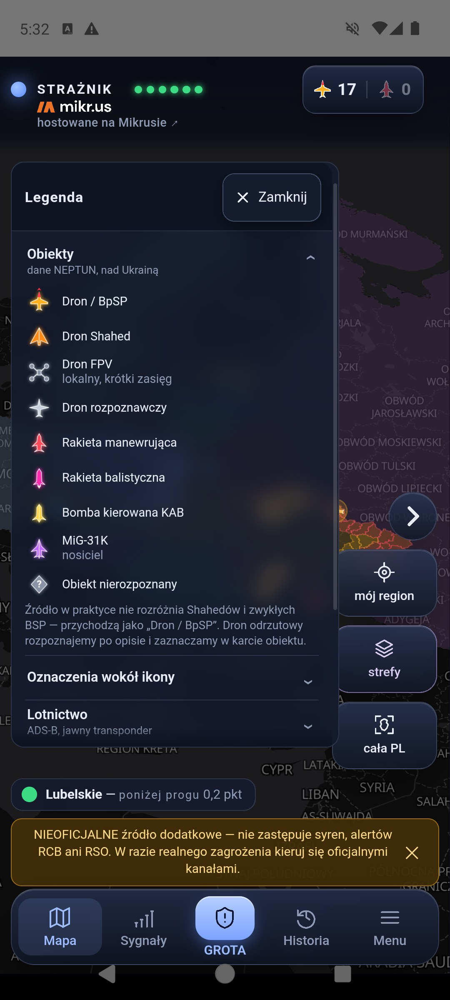
Karta obiektu i samolotu
Dotknięcie obiektu otwiera miniaturę karty w lewym dolnym rogu, a obiekt dostaje na mapie biały pierścień. Przycisk ze strzałką (Rozwiń kartę) rozwija ją na większą część ekranu i z powrotem zwija, krzyżyk zamyka.
Karta drona lub rakiety podaje typ, rejon zgłoszenia, liczbę potwierdzeń, wiarygodność, rejon możliwego położenia, kurs i odległość od granicy Polski. Czas dolotu (ETA) pojawia się tylko dla pozycji nadającej się do takiego obliczenia. Gdy źródło oznaczy pozycję jako rejon zgłoszenia, karta pisze „przybliżony rejon zgłoszenia — brak potwierdzonej trasy i czasu dolotu”, a odległość jest szacunkiem. Gdy źródło wyznaczyło pozycję z nazwy celu i kursu, karta pisze „kurs na cel: …” z dopiskiem, że przedłużenie trasy prowadzi w stronę Polski — to nie znaczy, że obiekt leci na Polskę. Kurs na Polskę, który mija najbliższy odcinek granicy o ponad 50°, karta opisuje jako „w stronę dalszego odcinka granicy”. Ilustracje obiektów są poglądowe (AI) i nie służą do rozpoznawania modelu.
Pod nazwą karta ma plakietkę „pozycja potwierdzona” (namiar ze źródła) albo „pozycja niepewna”. Na dole wiersz „Punkty teraz” pokazuje, ile obiekt w tej chwili daje każdemu województwu. Gdy w którymś daje zero, karta mówi dlaczego: limit NEPTUN-a w tym województwie (8 pkt) jest już pełny albo ten sam punkt liczy się z innego meldunku. W podglądzie historii są to punkty z wybranej chwili.
Karta samolotu lub śmigłowca pokazuje znak wywoławczy, rejestrację, kraj, model, przeznaczenie, wysokość, prędkość i kurs. Zdjęcie przedstawia przykładowy egzemplarz tego modelu — pod nim są autor, źródło i licencja. 📍 śledź trasę rysuje ślad lotu. Wiersz sygnał mówi, skąd wzięła się pozycja: ADS-B podaje sama maszyna, a MLAT liczą odbiorniki naziemne z różnic czasu dotarcia sygnału — poza ich zasięgiem, na przykład nad Białorusią, taka pozycja potrafi być o kilkadziesiąt kilometrów obok i karta wtedy o tym uprzedza. Wysokość, prędkość i kurs schodzą z pokładu w obu przypadkach. Gdy meldunek wymagałby niemożliwego skoku — maszyna nie przeleciałaby tego dystansu w tym czasie — Strażnik nie przenosi ikony: zostawia ją na ostatniej wiarygodnej pozycji, nie dopisuje takiego odcinka do trasy i mówi o tym w karcie. Mapa nie pokazuje maszyn z wyłączonym transponderem.

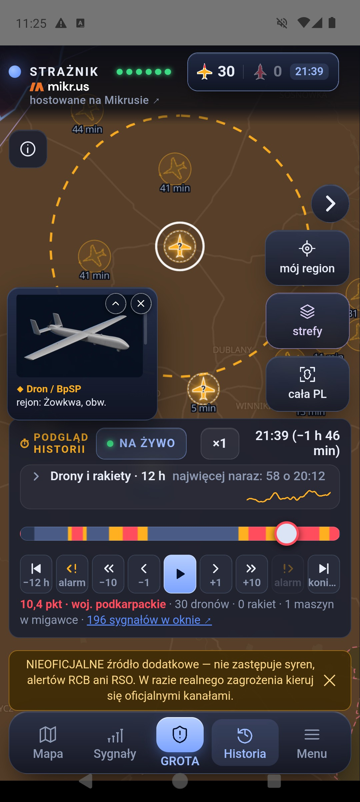

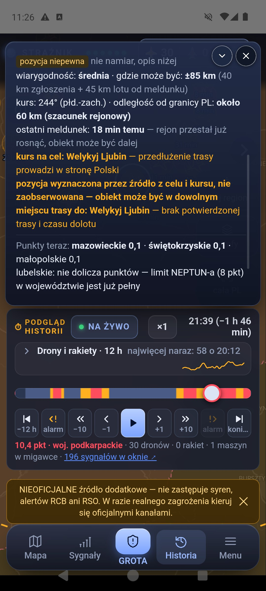

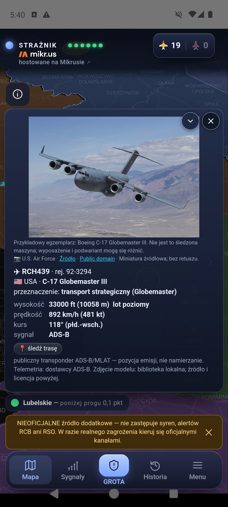
5. Strefy PAŻP na mapie
Kafelek strefy pokazuje aktywne strefy przestrzeni powietrznej z planu dobowego Polskiej Agencji Żeglugi Powietrznej. Strefa, która stoi od dawna albo była już aktywna przy starcie obserwacji, ma spokojny fioletowy kontur. Strefa włączona niedawno, na oczach Strażnika, jest żółta i ma bryłę 3D.
Dotknięcie strefy otwiera jej opis: typ i jego znaczenie po polsku, od kiedy Strażnik ją widzi, rezerwację do (koniec dzisiejszego wpisu w planie dobowym — strefa bywa przedłużana) i pułap. Przycisk z nazwą województwa prowadzi do jego karty, bo region w całości przykryty strefą trudno dotknąć na mapie.
Strefy nakładające się na siebie: dotknięcie otwiera najmniejszą strefę pod palcem, a pozostałe w tym miejscu są wymienione jako przyciski „W tym miejscu są też”.
Sama warstwa stref nie dodaje punktów. Punktuje tylko rzadka strefa typu D, R, NPZ albo ADHOC — zasady są w rozdziale o punktacji stref.

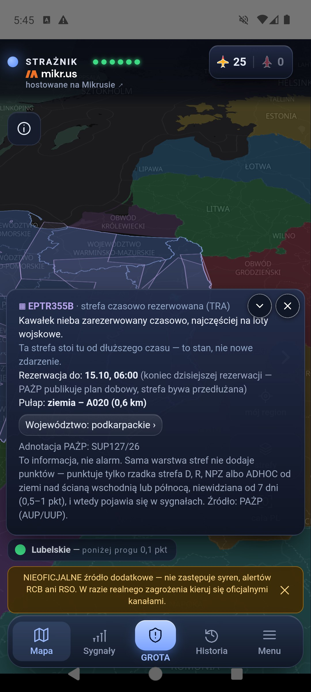

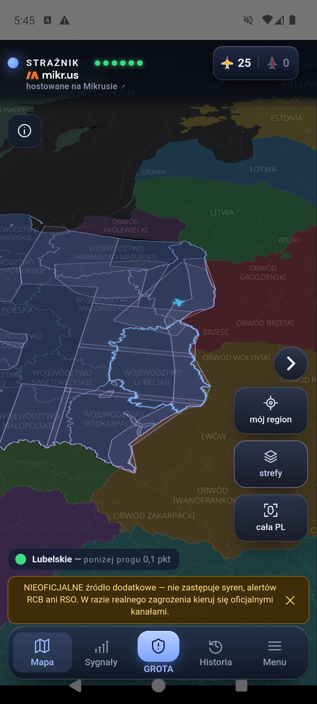

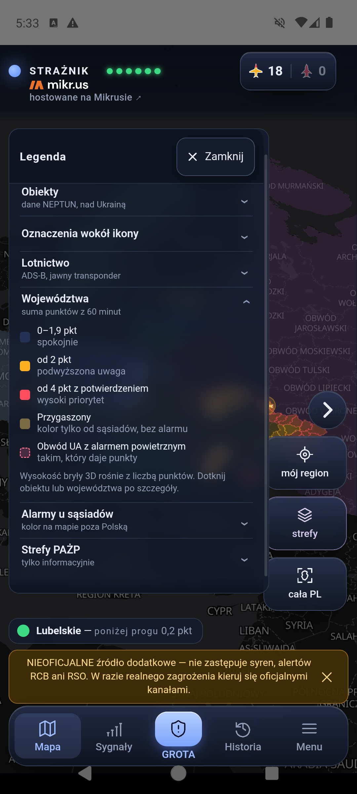
6. Panel sygnałów
Zakładka Sygnały otwiera karty województw. Twój region jest pierwszy i ma podpis „mój region”. Każda karta podaje punkty, poziom, podsumowanie „składa się z” (np. „0,6 ALARM UA”) i strefy PAŻP nad województwem. Dotknięcie karty rozwija listę sygnałów, a kolejne ją zwija — w trybie historii tak samo.
Każdy wiersz sygnału pokazuje źródło, wkład w punktach, tytuł (artykuł otwiera się jako link), wiek sygnału i jego wagę. Sygnał ma pełną wagę przez 30 minut, potem traci ją aż do zera w 60. minucie — dopisek „waga 64%” to właśnie to. Przekreślona liczba to wartość nominalna, której nie zaliczono, bo sygnał wygasa albo klasa źródła osiągnęła limit. Liczby w podsumowaniu są zaokrąglone osobno, dlatego ich suma może różnić się o 0,1 od wyniku.
Sygnał bez punktów zostaje widoczny z objaśnieniem:
- Powtórzenie oficjalnego alertu — artykuł, który tylko mówi o Alercie RCB (nazywa RCB, „alert dla…”, cytuje alert), gdy alert RCB albo RSO dla dowolnego województwa przyszedł do 4 godzin wcześniej. Punkty zostają artykułowi z informacją ponad alert: dron nad Polską, naruszenie przestrzeni, eksplozja, szczątki, syreny, poszukiwania. Artykuł o końcu zagrożenia („brak zagrożenia”) też jest bez punktów (od 1.7.99).
- Materiał historyczny / następstwa — rocznica, proces, odbudowa.
- Odwołany przez RCB i Po odwołaniu alertu RCB — alert, który RCB odwołało, i artykuły o nim.
- Alert RCB nie został jeszcze odwołany — alert obowiązuje do odwołania, a odwołanie potrafi przyjść po wielu godzinach. Nasze sygnały dawno wygasają i mapa wygląda spokojnie, więc wpis mówi wprost, że oficjalnie alert nadal stoi. Znika po odwołaniu, po upływie ważności wpisu w RSO (RCB często kończy tak alert bez osobnego odwołania) albo po dwunastu godzinach.
- Relacja z wcześniejszego zdarzenia — serwer przeczytał artykuł, a treść opisuje coś sprzed ponad godziny.
- Nie udało się przeczytać artykułu — bez punktów — treści nie dało się pobrać; link zostaje.
Wpis SĄSIEDZTWO to przeniesienie punktów z sąsiedniego województwa (rozdział 11).

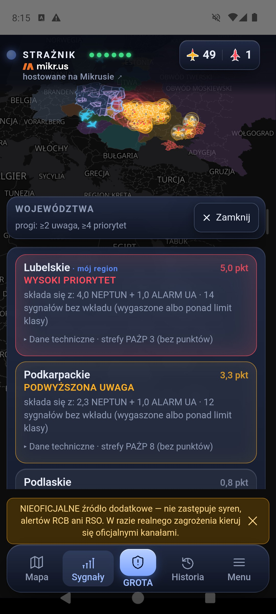
Niżej panel ma dwie listy obserwacji bez punktów: Obiekty ≤ 250 km od granicy (NEPTUN) i Lotnictwo wojskowe (ADS-B) nad wschodnią Polską. To publiczne dane z transponderów, a nie namierzanie. Pochodzą z darmowych, otwartych agregatorów: serwer pyta adsb.lol, a gdy ten nie odpowiada — opendata.adsb.fi; w trybie awaryjnym, gdy telefon liczy sam, dochodzi jeszcze airplanes.live. Warstwa jest informacyjna i nie daje punktów. W karcie województwa, jeśli są dostępne, znajdziesz też Kamery w regionie — kamery drogowe, nie narzędzie do wykrywania obiektów. Od 1.7.88 jest to sama lista z odnośnikami: podglądu nie pokazujemy u siebie, bo regulamin worldcam.pl na to nie zezwala. Dotknięcie kafelka otwiera kamerę u źródła.

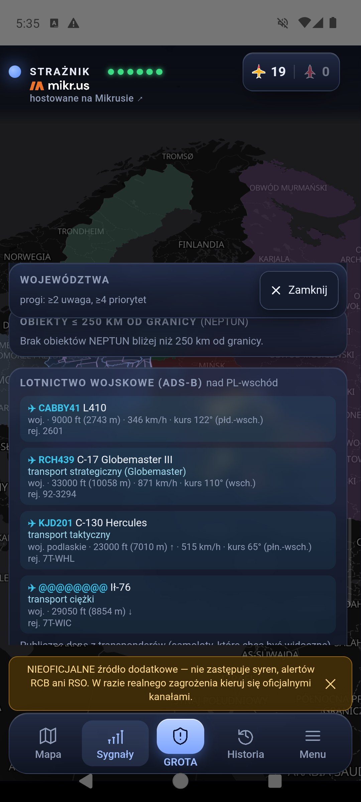

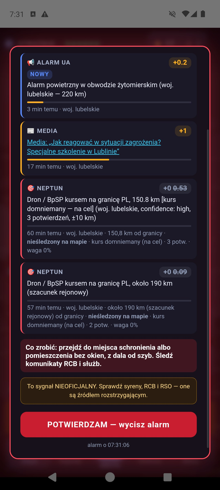

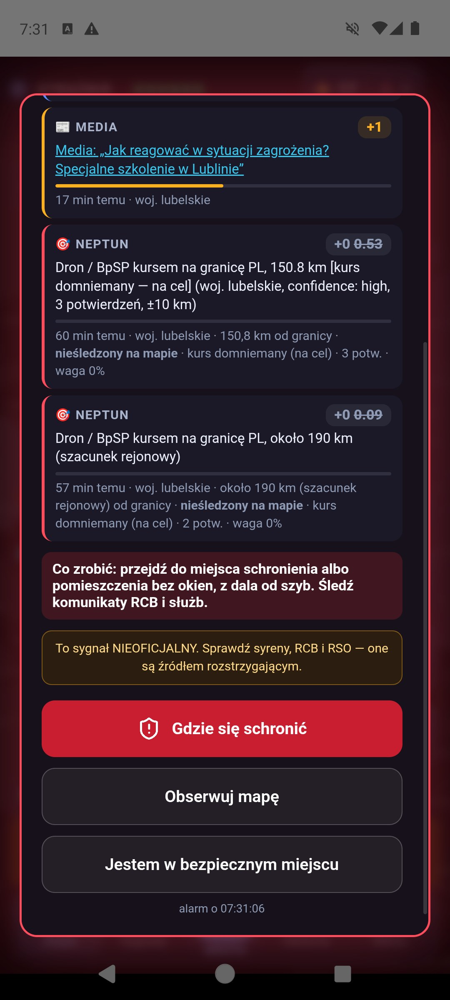
7. Historia 12 godzin
Zakładka Historia otwiera podgląd historii. Pasek suwaka jest pokolorowany według poziomu w każdej chwili, więc od razu widać, kiedy coś się działo. Przeciągnij uchwyt: mapa, kolory, obiekty i samoloty pokazują wybraną chwilę, a etykieta podaje godzinę i liczbę minut wstecz. Pod suwakiem jest najwyżej oceniane województwo z tej chwili, liczba dronów, rakiet i maszyn w migawce oraz link „N sygnałów w oknie”, który otwiera panel z tamtą chwilą.
Wykres 12 godzin (od 1.7.95) stoi nad suwakiem, na tej samej osi czasu: liczba dronów jako średnia z 30 minut na tle surowych słupków, a rakiety i bomby KAB jako czerwone kropki u dołu. Domyślnie jest zwinięty do jednego wiersza z najwyższą wartością — dotknij go, żeby rozwinąć; aplikacja zapamięta wybór. Przy kresce suwaka widać średnią z tamtej chwili, a dotknięcie wykresu przewija suwak w to miejsce. Wykres liczy to samo co licznik w górnym pasku, więc skoki w dół oznaczają zwykle, że źródło usunęło paczkę obiektów, a nie koniec ataku.
Pod suwakiem jest rząd przycisków: −12 h (początek), alarm wstecz (początek poprzedniego alarmu), −10 i −1 minut, ▶ odtwarzanie i pauza, +1 i +10 minut, alarm naprzód (następny alarm) oraz koniec (najnowsza migawka). Przytrzymanie ±1 i ±10 przewija dalej. Na wąskim ekranie albo przy dużym tekście podpisy pod przyciskami chowają się i zostają same ikony. ×1 w nagłówku zmienia prędkość odtwarzania na ×2 i ×4.
Od 10.10.2026 podgląd historii pokazuje strefy PAŻP z tamtej chwili: każda migawka zapisuje, które strefy obowiązywały, więc widać także te zdjęte potem z wykazu i otwierane w trakcie zdarzenia — PAŻP wymienia cały zestaw raz na dobę o 6:00. Wcześniej strefy były w historii ukryte, bo suwak rysowałby dzisiejsze nad sytuacją sprzed godzin. Dla chwil sprzed tej zmiany zapisu nie ma: strefy są wtedy ukryte, przycisk strefy znika, a panel historii mówi o tym wprost.
W trybie historii panel ma nagłówek PODGLĄD HISTORII, a czas sygnałów liczy się względem wybranej chwili („36 min wcześniej”). NA ŻYWO w nagłówku paska, zakładka Mapa albo systemowy przycisk „wstecz” przywraca bieżący widok.
Historia jest pobierana raz na urządzenie, a przewijanie działa lokalnie, bez zapytań do serwera przy każdym ruchu palca. Migawki powstają zwykle co minutę — to odtwarzanie zapisanych próbek, nie nagranie ciągłe.

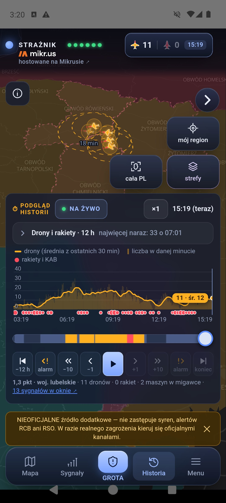

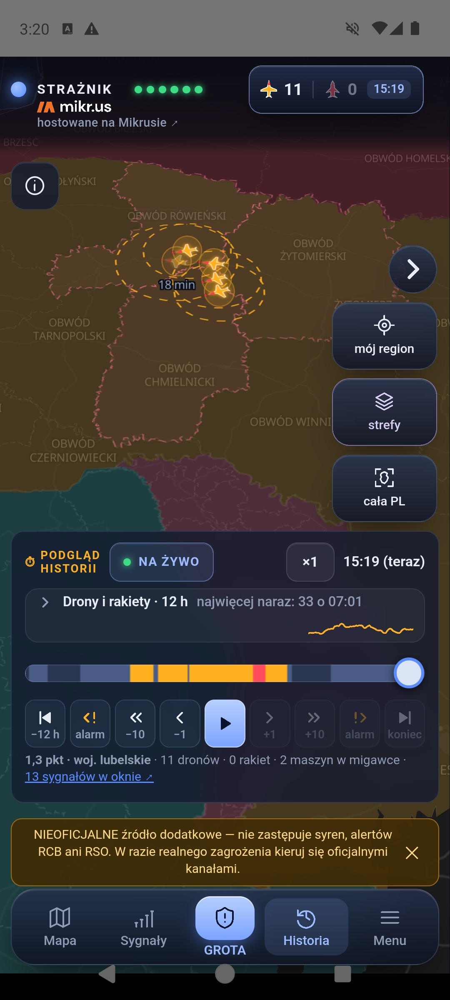

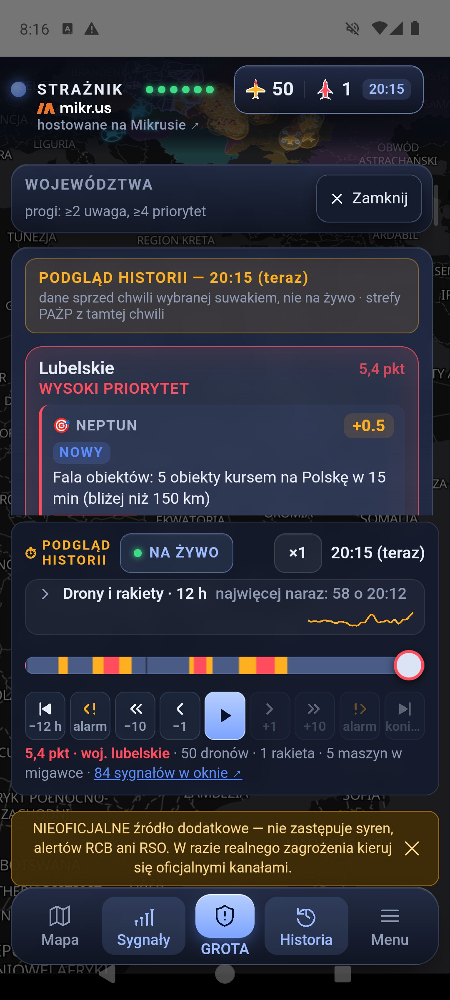
8. Obce maszyny nad wschodnią flanką
Ikona samolotu u góry otwiera listę wojskowych maszyn z rosyjską lub białoruską rejestracją, widocznych w publicznych danych ADS-B/MLAT nad wschodnią flanką. Panel ma dwie części: w zasięgu teraz i dziennik — wleciały / zniknęły z zasięgu z ostatnich 12 godzin, łącznie z czasem, gdy aplikacja była zamknięta.
W trybie historii panel pokazuje wybraną chwilę. Przygaszona maszyna na mapie to ostatnia zapisana pozycja sprzed najwyżej 2,5 minuty. „Zniknęła” oznacza utratę sygnału w danych, a nie lądowanie ani zestrzelenie. Te obserwacje nie dodają punktów, a pusta lista nie oznacza pustego nieba — wiele maszyn leci z wyłączonym transponderem.

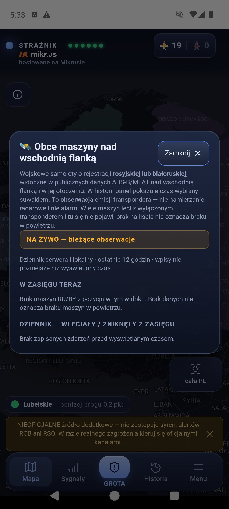
9. Alarmy i powiadomienia
| Poziom | Co się dzieje |
|---|---|
| poniżej 2 pkt | Informacja na mapie i w panelu, bez powiadomienia. |
| żółty, od 2 pkt — PODWYŻSZONA UWAGA | Powiadomienie i krótki sygnał uwagi na zwykłej głośności powiadomień. Szanuje tryb cichy i Nie przeszkadzać. Głośność tego sygnału ustawisz osobno, bez wpływu na czerwony — patrz niżej. |
| czerwony, od 4 pkt i potwierdzenie — WYSOKI PRIORYTET | Syrena, wibracja i alarm pełnoekranowy, jeśli system na to pozwala. Syrena gra w pętli, dopóki nie dotkniesz POTWIERDZAM na ekranie alarmu albo Wycisz alarm w powiadomieniu. Głośność „Alarmy” rośnie co najmniej do połowy; po włączeniu opcji pełnej głośności — do maksimum. Po wyciszeniu wraca poprzednia głośność. Na Androidzie w Menu → Ustawienia → Dźwięk i godziny ciszy → Czerwony alarm wybierzesz: Syrena (domyślnie), Tylko wibracja (pełny ekran i miganie zostają) albo Zwykłe powiadomienie (baner, krótki dźwięk i wibracja, bez pełnego ekranu i bez przebijania Nie przeszkadzać). |
Kiedy telefon dzwoni, a kiedy nie
- Powiadomienie przychodzi tylko dla obserwowanych województw z Moich miejsc.
- Województwo musi mieć co najmniej 1 pkt własnych sygnałów. Kolor wyłącznie od sąsiadów nie dzwoni.
- Przeniesienie od sąsiadów może domknąć próg najwyżej o jeden stopień: własne punkty poniżej żółtego plus sąsiad dają co najwyżej żółty.
- Bez powtórek: jeśli wynik spadnie i znów przekroczy ten sam próg w ciągu 60 minut od powiadomienia, zmienia się tylko mapa. Wyjątek: nowy Alert RCB/RSO. Wejście na wyższy poziom, z żółtego na czerwony, powiadamia zawsze.
- W otwartej aplikacji dźwięk gra według tych samych zasad co powiadomienie, nie według koloru mapy — dla każdego obserwowanego województwa, nie tylko pierwszego miejsca.
- Powiadomienie, które dotarło z opóźnieniem ponad 10 minut (np. po powrocie zasięgu), pokazuje się cicho z dopiskiem „opóźnione o … min”.
- Treść powiadomienia zaczyna się od godziny wysyłki („10:54 · …”) — tej, o której serwer stwierdził zagrożenie, a nie tej, o której wiadomość dotarła. Tę samą godzinę pokazuje zegarek w rogu powiadomienia i ekran pełnoekranowego alarmu.
- Podtrzymanie 10 minut: gdy wynik spadnie poniżej progu, poziom i kolor trzymają się jeszcze 10 minut od ostatniego przekroczenia, żeby nie migały przy wyniku krążącym wokół 2 pkt. Karta województwa pisze wtedy „podtrzymany do …”, a historia pokazuje to samo co mapa na żywo. Odwołanie RCB zdejmuje podtrzymanie od razu. Same punkty to co innego: sygnał liczy się w pełni przez 30 minut i wygasa przez kolejne 30 — także gdy obiektu nie ma już na mapie.
- Gdy aplikacja jest otwarta, alarm pokazuje się w niej, a w szufladzie zostaje ciche powiadomienie. To nie dubel: bez niego Google uznaje pilne wiadomości za zbędne i potrafi opóźniać kolejne o minutę i więcej. W Menu → Ustawienia → Alarmy i zgody obok godziny ostatniego sygnału widać, ile szedł i czy Google obniżył mu priorytet.
W Menu → Ustawienia → Dźwięk i godziny ciszy są ▶ Test: uwaga, ▶ Test: syrena i ▶ Test: pełny alarm. To testy w oknie aplikacji. W aplikacji na Androida są też ▶ Test: czerwony natywny i ▶ Test: żółty natywny: po 5 sekundach przychodzi prawdziwe powiadomienie z syreną albo sygnałem uwagi, więc możesz zablokować ekran i sprawdzić alarm nad blokadą. Żaden test nie sprawdza dostarczania pushy z serwera.
Głośność czerwonego alarmu
Syrena gra na suwaku „Alarmy” w Androidzie, a nie „Dzwonek” czy „Multimedia”. Czerwony alarm podnosi ten suwak co najmniej do połowy. Przełącznik Czerwony alarm zawsze na pełnej głośności jest domyślnie wyłączony; po jego świadomym włączeniu (aplikacja pyta o potwierdzenie) syrena gra na maksimum, także w nocy. Obecny poziom suwaka widać w tej samej zakładce, a Ustawienia dźwięku Androida prowadzi do suwaków systemu. Menu → Powiadomienia otwiera w aplikacji stan powiadomień.
Wibracje i zegarek
Wibracja mówi alfabetem Morse'a: żółty to „U” (· · —, jak Uwaga), czerwony to „A” (· —, jak Alarm), powtarzane. Kto nie zna Morse'a, rozpozna je po rytmie: dwa krótkie i długi to żółty, krótki i długi to czerwony — żadnego nie pomylisz ze zwykłym SMS-em. Ten sam wzór ma powiadomienie, otwarta aplikacja i strona w Chrome na Androidzie. Przyciski ▶ Poczuj: żółty (U) i ▶ Poczuj: czerwony (A) w sekcji Dźwięk i godziny ciszy tylko odtwarzają te wzory — niczego się nimi nie wybiera. W aplikacji na Androidzie (od 1.7.94) wibrują tak jak prawdziwy sygnał: żółty jak powiadomienie, więc w trybie cichym milczy, a aplikacja mówi dlaczego; czerwony jak alarm, także w trybie cichym. Jeśli wyłączysz wibrację kanału w ustawieniach powiadomień Androida, aplikacja też o tym powie. Na stronie w Chrome wibrację daje przeglądarka i w trybie cichym jej nie ma. Na iPhonie własnych wzorów wibracji nie ma — iOS na to nie pozwala.
Zegarek i opaska. Od wersji 1.7.93 czerwony alarm trafia także na sparowany zegarek z Wear OS — wcześniej Android go tam nie przekazywał. Opaski i zegarki z własną aplikacją (np. Mi Fitness, Zepp, Garmin Connect, Galaxy Wearable) pokażą go, jeśli w ich ustawieniach powiadomień zezwolisz na Strażnika. Zegarek wibruje po swojemu, więc rytmu „U” i „A” na ręce zwykle nie poczujesz. Nie sprawdziliśmy tego na każdym modelu — sprawdź u siebie przyciskiem ▶ Test: czerwony natywny.
Żółty budzi w nocy — co z tym zrobić
W Menu → Ustawienia → Dźwięk i godziny ciszy jest Głośność sygnału uwagi (żółty) z trzema ustawieniami: Normalny, Ciszej (około dziesięć razy ciszej) i Bez dźwięku (zostaje baner i wibracja). Dotyczy to wyłącznie żółtego. Czerwony ma własny wybór Czerwony alarm (tylko Android): Syrena (domyślnie), Tylko wibracja — milknie sama syrena, a wibracja, pełny ekran i miganie zostają — albo Zwykłe powiadomienie — czerwony przychodzi jak żółty: baner, krótki dźwięk i wibracja, bez pełnego ekranu, a w trybie Nie przeszkadzać może nie dotrzeć. Przy obu cichszych trybach aplikacja pyta o potwierdzenie, bo przy wygaszonym ekranie i telefonie w drugim pokoju takiego alarmu można nie zauważyć. Opcja pełnej głośności jest wtedy nieczynna (nie ma czego podgłaszać); samą syrenę usłyszysz przyciskiem Test: syrena. Na iPhonie tego wyboru nie ma: iOS nie pozwala wyciszyć pojedynczego rodzaju powiadomienia. Na Androidzie ustawienie działa i przy otwartej aplikacji, i przy zgaszonym ekranie, bo żółty idzie wtedy na osobny kanał powiadomień. Na iPhonie zmienia tylko dźwięk w otwartej aplikacji: głośność powiadomienia push wybiera system i aplikacja nie ma na nią wpływu.
Godziny ciszy (Android, od 1.7.95)
Jeśli w dzień chcesz słyszeć alarmy, a w nocy wystarczy Ci wibracja, nie musisz co wieczór niczego przełączać. W Menu → Ustawienia → Dźwięk i godziny ciszy włącz Godziny ciszy i wybierz porę: Od … do (domyślnie 22:00–7:00; okno może przechodzić przez północ). W tych godzinach żółty przychodzi bez dźwięku — zostaje baner i wibracja. Dla czerwonego wybierasz Czerwony w godzinach ciszy: Tylko wibracja (domyślnie) — milknie syrena, a pełny ekran i mocna wibracja zostają — albo Bez zmian, czyli tak, jak ustawiłeś wyżej dla czerwonego alarmu.
Godziny ciszy nigdy nie robią alarmu głośniejszym: jeśli na co dzień czerwony ma tylko wibrację albo zwykłe powiadomienie, tak zostaje. Poza wybranymi godzinami wszystko działa jak zwykle. Godziny liczą się według zegara telefonu, a ustawienie działa i przy otwartej aplikacji, i przy zgaszonym ekranie — w godzinach ciszy powiadomienia idą osobnymi, cichymi kanałami. Sprawdziliśmy to na emulatorze Pixela; nocą na prawdziwym alarmie jeszcze nie. Pamiętaj, że wibracji telefonu leżącego w drugim pokoju możesz nie poczuć. Na iPhonie godzin ciszy nie ma — dźwięk powiadomienia ustala tam serwer.
Drugi sposób, dostępny od razu w systemie: włącz na noc Nie przeszkadzać. Sprawdziliśmy to pomiarem na Androidzie 14 — zwykłe Nie przeszkadzać wycisza żółty, a czerwony przechodzi: syrena gra, ekran się zapala, alarm pełnoekranowy pokazuje się nad blokadą. Na iPhonie to samo robi Tryb skupienia (np. Sen): czerwony jest oznaczony jako powiadomienie czasowe i przebija skupienie, żółty nie.
Jeden warunek na Androidzie: czerwony przechodzi dlatego, że Nie przeszkadzać domyślnie przepuszcza alarmy. Jeśli w Ustawienia → Nie przeszkadzać → Alarmy i inne zakłócenia wyłączysz pozycję Alarmy, syrena zamilknie i ekran się nie zapali — sprawdziliśmy to osobnym pomiarem. Zostaw Alarmy włączone; to nie wpływa na żółty, bo ten nie jest alarmem i tak czy owak zostaje wyciszony.
Jak to działa technicznie: serwer wysyła push przez Firebase dla każdego obserwowanego województwa, także przy zamkniętej aplikacji i zablokowanym ekranie. Alarmy docierają też po nocnym restarcie telefonu, zanim go odblokujesz. „Wymuś zatrzymanie” w ustawieniach Androida — a na części telefonów Xiaomi, Huawei czy Oppo także usunięcie aplikacji z listy ostatnich — blokuje odbiór do ponownego uruchomienia aplikacji; ustawienia ostrzegają o tym na takich telefonach. Osobną pułapką jest usypianie aplikacji przez nakładkę producenta: na telefonach Samsunga pozycja „aplikacje uśpione” i „głęboko uśpione” potrafi wstrzymać push zupełnie, mimo włączonych powiadomień i działającego internetu — bo to osobne ustawienie. Od wersji 1.7.91 Strażnik ostrzega o tym w ustawieniach, gdy wykryje ograniczenie baterii na takim telefonie, i pokazuje godzinę ostatniego odebranego sygnału z serwera. Tryb awaryjny: gdy serwer nie odpowiada, otwarta aplikacja uruchamia wbudowany silnik i sama odpytuje źródła; co minutę sprawdza powrót serwera. Tryb awaryjny działa tylko przy otwartej aplikacji i nie czyta treści artykułów prasowych, więc media są wtedy na liście bez punktów; treść komunikatu RCB ze strony gov.pl czyta tak samo jak serwer.
Gdzie się schronić — GROTA
Po dotknięciu POTWIERDZAM — wycisz alarm syrena milknie, a ekran alarmu pokazuje trzy przyciski: Gdzie się schronić, Obserwuj mapę i Jestem w bezpiecznym miejscu. Strażnik nigdy sam nie przełącza ekranu — wybierasz Ty.
Gdzie się schronić otwiera moduł GROTA od razu na zakładce TERAZ: ustala Twoją pozycję i pokazuje najbliższe punkty schronienia z publicznego wykazu Komendy Głównej PSP (dane.gov.pl), osobno całodobowe, dostępne w określonych godzinach i „na żądanie”, z odległością i trasą pieszo, rowerem albo samochodem. GROTA zaczyna się wczytywać w tle już w chwili alarmu, więc po potwierdzeniu otwiera się natychmiast. Poza alarmem otworzysz ją przyciskiem GROTA pośrodku dolnego paska; tam są też zakładki Mapa, Miejsca, Przygotuj i Zasady.
- Wykaz punktów i wyszukiwanie najbliższego działają bez internetu. Trasa po drogach wymaga internetu; bez niego widzisz odległość w linii prostej.
- GROTA obejmuje tylko Polskę. Poza granicą pokazuje komunikat zamiast trasy i pozwala wskazać miejsce ręcznie.
- To wykaz miejsc, a nie gwarancja: obiekty „w godzinach” i „na żądanie” mogą być zamknięte. Zapytaj zarządcę budynku zawczasu.
- GROTA mówi po polsku, angielsku i ukraińsku — język wybierzesz w jej zakładce Zasady. Jest w aplikacjach na Androida i iPhone’a; na stronie WWW jej nie ma.
Na iPhonie alarm działa inaczej: bez pełnego ekranu, syrena gra raz, a wyciszony dzwonek ją wycisza — chyba że w ustawieniach włączysz Włącz alarm mimo wyciszenia (alarm krytyczny Apple). Wtedy czerwony zagra także na wyciszonym telefonie, a nad powiadomieniem pojawi się etykieta „KRYTYCZNE”. Szczegóły i ustawienia, które trzeba sprawdzić, są w instrukcji dla iPhone'a.
10. Strona WWW i powiadomienia w przeglądarce
Na straznik.eu działa ta sama mapa. Na górze są dodatkowo przyciski Pobierz aplikację, Instrukcja i Postaw kawę. W karcie przeglądarki widać ikonę Strażnika.
Powiadomienia w przeglądarce: najpierw zapisz województwo w Menu → Ustawienia → Moje miejsca, potem otwórz Menu → Powiadomienia i zezwól na powiadomienia. Przychodzą także przy zamkniętej karcie — po jednym na alarm, bez ciągłej syreny. Ciągła syrena z wibracją gra tylko w otwartej karcie przy czerwonym poziomie. Na iPhonie powiadomienia działają tylko dla strony dodanej do ekranu początkowego.
Wyłączanie: otwórz Menu → Powiadomienia (albo Menu → Ustawienia → Alarmy i zgody) i wybierz Wyłącz powiadomienia w tej przeglądarce. Strażnik usuwa wtedy subskrypcję na serwerze i w przeglądarce. Samo pozwolenie przeglądarki usuniesz w jej ustawieniach — komunikat podaje ścieżkę dla Twojej przeglądarki, np.:
W każdej przeglądarce: otwórz jej Ustawienia, w polu wyszukiwania wpisz „ustawienia witryn” (albo samo „witryn”) → Uprawnienia → odnajdź straznik.eu → Powiadomienia → Blokuj.
Chrome na Androidzie: ⋮ → Ustawienia → Ustawienia witryn → Powiadomienia → straznik.eu → Blokuj.
11. Skąd biorą się punkty
Punkty liczą się z okna 60 minut. Przez pierwsze 30 minut sygnał ma pełną wagę, potem traci ją liniowo do zera. Każda klasa źródła ma limit, więc wiele artykułów czy alarmów obwodów o tym samym nie sumuje się bez końca. Kolejna obserwacja tego samego obiektu NEPTUN nie jest liczona jako nowy obiekt.
| Źródło | Co jest uwzględniane | Punkty / limit |
|---|---|---|
| NEPTUN — obiekty | Typ, liczba obiektów, odległość od granicy, kurs, wiarygodność, liczba potwierdzeń, stan obserwacji i jakość pozycji. Rejon zgłoszenia ×0,6, rozpoznany środek miejscowości ×0,5. | łącznie do 8 |
| RCB / RSO | Alert RCB o zagrożeniu z powietrza opublikowany w RSO. Liczy się 60 minut od wykrycia, niezależnie od daty ważności wpisu. Odwołanie w RSO od razu zeruje alert. Od 17.09.2026 RCB wysyła trzy rodzaje komunikatu i tyle samo ważą: „sytuacja jest monitorowana” 1,5; „trwa zmasowany atak… reaguj na sygnały alarmowe” 3; „zagrożenie atakiem z powietrza, znajdź bezpieczne miejsce” 4,5. Kolejny alert nie sumuje się z poprzednim: liczy się bieżący, a nadwyżka mocniejszego gaśnie w 10 minut. Od 24.09.2026 czytana jest dodatkowo treść komunikatu dnia na gov.pl/rcb: RSO niesie czasem tylko część odbiorców alertu (17.09 i 24.09 przepadło podkarpackie), więc brakujące województwa dobierane są ze strony — tak samo wtedy, gdy aplikacja liczy sama, bez serwera. Artykuł na gov.pl o alercie, który RSO już odwołało, nie daje punktów. | 1,5 / 3 / 4,5, limit 4,5 |
| Alarmy obwodów UA | Alarm powietrzny w obwodzie zachodniej Ukrainy; waga maleje z odległością (tabela niżej). Pierwsze 30 minut od początku alarmu w pełni, potem w połowie, dopóki trwa; koniec alarmu od razu zeruje punkty. | do 1, limit 1 |
| Media (RSS) | Obiekt powietrzny i zdarzenie: 0,5 pkt; jednoznaczna relacja operacyjna (syreny, alarm, poderwane lotnictwo, zestrzelenie): 1 pkt. Serwer czyta cały artykuł: relacja z wcześniejszego zdarzenia albo artykuł nieczytelny ma 0 pkt. Ćwiczenia, rocznice, sprawy sądowe i powtórzenia alertu RCB też 0. | 0 / 0,5 / 1, limit 1 |
| ADS-B | Co najmniej 3 maszyny wojskowe i ponad dwukrotność zwykłego ruchu o tej porze (tło z 7 dni). Od 13.09.2026 tylko informacyjnie: w 41 dniach danych wzmożony ruch był rutynowymi lotami. | 0 |
| Strefy PAŻP | Tylko rzadkie strefy D, R, NPZ, ADHOC od ziemi nad wschodem lub północą (niżej). | 0,5 (północ 1), limit 1 |
| Media bałtyckie | Incydent powietrzny (naruszenie przestrzeni, zestrzelenie) na Litwie, Łotwie lub w Estonii: 0,5 pkt. Ogłoszony alarm powietrzny dla ludności tych krajów to ślad w panelu: Litwa 0,3, Łotwa 0,18, Estonia 0,12. Kanały: LRT i 15min, LSM, ERR. Odwołanie wygasza wkład. Tytuł, który nadal ogłasza alarm (np. zawężony do mniejszego regionu), nie jest odwołaniem; artykuł opublikowany przed odwołaniem nie otwiera alarmu na nowo, a relacja o alarmach w innych krajach nie jest alarmem w kraju redakcji. Stan kanałów i ostatni alarm są w oknie Źródła (dotknięcie diod). | alarm 0,12–0,3; incydent 0,5 |
| Strefy sąsiadów | Zamknięcia przestrzeni na Litwie, w Estonii i północnej Rumunii. | 0,3, limit 0,6 |
| Pozostali sąsiedzi (obserwacja) | Zdarzenie w przestrzeni powietrznej w Mołdawii, Rumunii, na Słowacji, w Czechach, Szwecji lub na Węgrzech. Kraj podświetla się na mapie, wpis trafia do panelu — ale nie dodaje ani jednego punktu i sam niczego nie podnosi. Dlaczego, piszemy niżej. | 0 |
Sześciu nowych sąsiadów — na razie tylko obserwujemy
Od 3 października 2026 Strażnik czyta także media w Mołdawii, Rumunii, na Słowacji, w Czechach, w Szwecji i na Węgrzech — po dwa kanały na kraj. Zdarzenie w przestrzeni powietrznej u któregoś z nich podświetla ten kraj na mapie; dotknięcie otwiera kartę z doniesieniem i odnośnikiem do źródła.
Te sześć krajów nie dodaje punktów. Zero. Nie mogą podnieść poziomu, nie wywołają powiadomienia i nie zmienią koloru Twojego województwa. Powód jest prosty: czeskie i słowackie redakcje piszą o cudzej przestrzeni powietrznej częściej niż o własnej, więc najpierw przez kilka tygodni sprawdzamy, czy nasz filtr nie bierze zdarzenia w Danii albo nad Polską za zdarzenie u nich. Dopiero gdy to przejdzie, włączymy wagi — i napiszemy o tym w historii zmian. Litwa, Łotwa i Estonia działają bez zmian i punktują jak dotąd.
Stan tych kanałów widać w oknie Źródła (dotknij diod u góry) w osobnej pozycji „Pozostali sąsiedzi — obserwacja”. Na mapie przybyła przy tej okazji Szwecja, której wcześniej nie było.
Alarmy obwodów UA — waga według odległości
Waga maleje płynnie: przy granicy 1; 50 km 0,7; 100 km 0,5; 150 km 0,3; 220 km 0,15; 320 km 0,08. Obwód liczy się dla obu województw, każde według swojej odległości. Czas liczy się od prawdziwego początku alarmu: przez 30 minut pełna waga, dalej połowa, dopóki alarm trwa. Gdy obwód zniknie z listy alarmów na 3 minuty, alarm jest zakończony — punkty i podświetlenie znikają od razu, a panel pokazuje godzinę końca:
| Obwód | Lubelskie: km | waga | Podkarpackie: km | waga |
|---|---|---|---|---|
| lwowski | 0 | 1,00 | 0 | 1,00 |
| wołyński | 0 | 1,00 | 55 | 0,68 |
| zakarpacki | 135 | 0,36 | 0 | 1,00 |
| iwanofrankowski | 100 | 0,50 | 50 | 0,70 |
| rówieński | 70 | 0,62 | 110 | 0,46 |
| tarnopolski | 100 | 0,50 | 115 | 0,44 |
| chmielnicki | 160 | 0,28 | 190 | 0,21 |
| czerniowiecki | 225 | 0,15 | 180 | 0,24 |
| żytomierski | 220 | 0,15 | 265 | 0,12 |
| winnicki | 280 | 0,11 | 305 | 0,09 |
Nawet alarm we wszystkich obwodach naraz daje najwyżej 1 pkt — alarmy obwodów to jedna informacja, nie kilka niezależnych potwierdzeń.
Media: czytanie całego artykułu
Tytuł bywa mylący: artykuł opublikowany o 9:46 z nagłówkiem o syrenach może opisywać noc. Dlatego serwer pobiera treść artykułu i szuka czasu zdarzenia — godziny („przed godziną 4 rano”, „o godz. 4.19”), słów „w nocy”, „przed świtem”, „wczoraj” czy innego dnia tygodnia. Jeśli zdarzenie było ponad godzinę przed publikacją, artykuł jest widoczny jako relacja z wcześniejszego zdarzenia i ma 0 pkt. Linki z Google News prowadzą do strony zgody Google, której serwer nie akceptuje — wtedy szuka tego samego artykułu w kanale RSS redakcji. Jeśli treści nie da się przeczytać, artykuł ma 0 pkt i zostaje w panelu z linkiem.
Po odwołaniu alertu RCB w danym województwie przez 4 godziny artykuły relacjonujące syreny lub alert mają 0 pkt, chyba że RCB wyda nowy alert. Tytuły podsumowujące, np. „Niespokojny poranek…”, liczą się najwyżej za 0,5 pkt.
Obiekty NEPTUN i odległość
Wagi typów: balistyczna 3,0; MiG-31K 2,6; manewrująca 2,4; KAB 1,8; Shahed 1,4; dron 1,1; rozpoznawczy 0,15; FPV 0. Waga jest mnożona przez pierwiastek z liczby obiektów, odległość, kurs i jakość danych: wiarygodność (wysoka ×1,0, średnia ×0,6, niska ×0,35), liczbę zgłoszeń (jedno ×0,7, dwa ×0,9, trzy–cztery ×1,1, pięć i więcej ×1,25), stan obserwacji (potwierdzony ×1,1, niepewny ×0,85, świeży ×0,7) i jakość pozycji. Odległość działa płynnie: 0 km ×1,7; 15 ×1,6; 45 ×1,3; 80 ×1,0; 110 ×0,7; 150 ×0,4; 200 ×0,25; 250 ×0,1; dalej 0. Obiekt punktuje każde województwo w zasięgu 250 km, każde według odległości do niego — nie tylko to, które ma najbliżej. Od 1.7.97 tak samo liczy aplikacja, gdy serwer nie odpowiada i liczy sama. Kurs w granicach ±50° od kierunku na Polskę liczy się w pełni, od 50° do 70° coraz słabiej, dalej wcale. Przy nieznanym kursie obiekt dostaje połowę wagi i tylko do 150 km. Rakieta lub MiG-31K do 60 km od granicy, z co najmniej dwoma potwierdzeniami i pozycją punktową, daje minimum 2 pkt (przy nieznanym kursie 1 pkt).
Dron przy granicy (od 18.10.2026): dron albo Shahed do 30 km od województwa, z co najmniej dwoma zgłoszeniami i pozycją punktową, daje temu województwu co najmniej 2 pkt, czyli żółty — także bez znanego kursu, o ile kurs nie wskazuje lotu od Polski. Odległość liczy się osobno do każdego województwa, więc dron blisko dwóch ostrzega oba. Ten dodatek nie przechodzi na sąsiednie województwa, a jedno zgłoszenie nie wystarcza.
Czas dolotu
Karta obiektu szacuje czas do granicy Polski i granicy wybranego województwa, nie do adresu. Liczy go z prędkości podanej przez źródło, zmierzonej z kolejnych pozycji albo typowej dla klasy obiektu i odejmuje 2,5 minuty na opóźnienie danych. Dla pozycji przybliżonej ETA nie jest pokazywane na karcie, ale jest liczone wewnętrznie — używa go warunek czerwonego alarmu (niżej). Przy kursie znanym albo wyliczonym z ruchu obiektu (nie domniemanym z nazwy celu), co najmniej dwóch potwierdzeniach, średniej lub wysokiej wiarygodności i pozycji punktowej ETA ≤ 10 min podnosi wkład obiektu do 2 pkt, a ≤ 5 min — do 4 pkt.
Kiedy zapala się czerwony
Same 4 punkty nie wystarczą. Od 23 września 2026 czerwony wymaga jeszcze potwierdzenia, czyli jednego z dwóch:
- Alert RCB o treści „znajdź bezpieczne miejsce” — najwyższy z trzech poziomów, którymi RCB rozróżnia komunikaty od 17 września. Taki alert zapala czerwony sam, bo państwo wprost wzywa do schronienia.
- Realny obiekt uderzeniowy kursem na Polskę — rakieta, Shahed, KAB albo dron bojowy, którego czas dolotu do granicy wynosi 15 minut lub mniej, albo który jest bliżej niż 50 km. Drugi warunek jest bezpiecznikiem na wypadek drona odrzutowego (Geran-3/4), którego źródło nie opisało jako odrzutowy — dla niego 50 km to niecałe 7 minut. Nie wystarcza pozycja podana tylko jako rejon (środek obwodu) z niepewnością ponad 30 km — taki meldunek daje punkty, ale czerwonego nie otwiera (od 15.10.2026). Nie otwiera go też punkt „na cel”: obiekt z kursem domniemanym i pozycją rejonową, którą źródło wyznacza z celu i kursu, a nie z obserwacji (od 18.10.2026). Meldunek o obiekcie nie może być starszy niż 25 minut.
Czas dolotu liczy się z prędkości typowej dla klasy obiektu, po odjęciu 2,5 minuty zapasu, więc próg sam się przelicza: dron śmigłowy około 55 km, odrzutowy około 140 km, rakieta manewrująca prawie 250 km. Drony rozpoznawcze nie są potwierdzeniem — one nie atakują.
Bez potwierdzenia region zostaje żółty, nawet przy 5 punktach, a Strażnik pisze o tym wprost na karcie: „brak potwierdzenia obiektem — zostaje żółty”. Powód zmiany: do 23 września Alert RCB o monitorowaniu sytuacji razem z alarmami obwodów Ukrainy i doniesieniami mediów potrafił zapalić czerwony, choć na mapie nie było nic bliżej niż 80 km. Na danych od 1 września nowa reguła zostawia czerwony w dwóch przypadkach z ośmiu — tych, w których obiekt był 15 minut od granicy.
Fala obiektów
Trzy różne obiekty lecące w stronę Polski w ciągu 15 minut i bliżej niż 150 km dokładają wspólnie 0,5 pkt. Kilka obiektów naraz znaczy więcej niż każdy z osobna, a pojedyncze meldunki o tym samym obiekcie fali nie tworzą. Od 1 września fala wystąpiła cztery razy i za każdym razem przy realnym zdarzeniu.
Przeniesienie na sąsiednie województwa
Województwo z co najmniej 2 pkt z sygnałów innych niż regionalny Alert RCB i obiekty NEPTUN przekazuje 40% sąsiadom, 16% kolejnemu kręgowi i tak dalej. Oficjalny alert RCB nie jest przenoszony — jego obszar wskazał nadawca. Obiekty NEPTUN też nie (od 1.7.99): każdy obiekt sam punktuje każde województwo w promieniu 250 km od własnej odległości, a wcześniej ten sam dron liczył się u sąsiada drugi raz — 19.10.2026 świętokrzyskie z 1,1 pkt własnych miało przez to 9,5 pkt i czerwony kolor. Przechodzą więc alarmy obwodów Ukrainy, media, lotnictwo i strefy. To samo zdarzenie nie wraca przez przeniesienie: artykuł albo alarm obwodu przypisany do dwóch sąsiednich województw liczy się w każdym w całości, ale nie jest doliczany drugi raz jako przeniesienie. Przeniesienie to kontekst regionalny, a nie prognoza trasy obiektu; kolor wyłącznie od sąsiadów jest przygaszony i nie dzwoni. Dodatek z podłogi dla drona przy granicy zostaje w swoim województwie — sąsiedzi dostają część tylko ze zwykłych punktów obiektu.
Które strefy PAŻP punktują
PAŻP codziennie publikuje dziesiątki stref: szkolenia wojskowe, skoki spadochronowe, szybowce, drony komercyjne. Gdyby każda punktowała, mapa świeciłaby na żółto codziennie. Dlatego:
| Typ strefy | Znaczenie | Punktuje? |
|---|---|---|
| D — niebezpieczna | strzelania, ćwiczenia | tak, przy trzech warunkach niżej |
| R — ograniczona | wejście tylko za zgodą | tak, przy tych samych warunkach |
| NPZ — zakaz lotów | obszar zamknięty | tak, przy tych samych warunkach |
| ADHOC — doraźna | powołana tego samego dnia | tak, przy tych samych warunkach |
| TSA / TRA | ćwiczenia planowane z wyprzedzeniem, niemal codziennie | nie — tylko na mapie |
| ATZ | zwykły ruch wokół lotniska | nie — nie jest pokazywana |
| adnotacje PJE, GLD, CLN, BSP, UAV | spadochrony, szybowce, drony cywilne | nie — odsiewane |
Strefa D, R, NPZ albo ADHOC punktuje tylko wtedy, gdy spełnia wszystkie trzy warunki: sięga od ziemi w górę, ten sam identyfikator nie pojawił się przez ostatnie 7 dni, a strefa leży nad ścianą wschodnią albo nad północą. Waga jest niska (0,5 pkt), bo zamknięcie nieba to decyzja wojska, a nie niezależny pomiar zagrożenia — strefa nigdy nie podniesie poziomu sama.
Na północy strefa waży 1 pkt. NEPTUN obserwuje Ukrainę i dla Pomorza, zachodniopomorskiego, warmińsko-mazurskiego i kujawsko-pomorskiego nie daje nic. Zostają strefy, media, RCB i zamknięcia nieba u sąsiadów nad Bałtykiem. Zasada bezpieczeństwa się nie zmienia: strefa 1 pkt + relacja mediów 1 pkt = próg żółty; incydent bałtycki z mediów waży od 15.09.2026 tylko 0,5 pkt i liczy się wyłącznie świeże doniesienie (do 30 minut) o zdarzeniu teraz, więc strefa + Bałtyk to 1,5 pkt; sama strefa to wciąż cisza.
12. Ograniczenia i rozwiązywanie problemów
- Czerwona dioda — jedno ze źródeł nie odpowiada. Pozostałe działają; fuzja ma wtedy mniej potwierdzeń. Gdy NEPTUN nie odpowiada dłużej niż 2 minuty, nad mapą pojawia się pasek „NEPTUN nie odpowiada od…”. Obiekty z ostatniego meldunku zostają na mapie, bo pusta mapa przy awarii źródła wyglądałaby jak spokój.
- Pusta mapa albo wszystkie diody czerwone — sprawdź połączenie i inną sieć. Antywirus lub proxy, które przechwytują HTTPS, potrafią blokować połączenia aplikacji; nie wyłączaj ochrony na stałe, tylko sprawdź wyjątek dla straznik.eu.
- Brak powiadomień — sprawdź Moje miejsca (obserwowane województwo), zgody, kanały powiadomień, baterię i czy aplikacja nie została wymuszenie zatrzymana. Test dźwięku nie sprawdza drogi push z serwera.
- Obiekt jest na liście, a nie ma go na mapie — sygnał żyje w oknie 60 minut, a pozycja jest z bieżącej migawki. Zniknięcie obiektu nie dowodzi zestrzelenia.
- Niepełny obraz — NEPTUN jest agregatorem OSINT, a nie radarem; ADS-B widzi tylko jawne transpondery; komunikaty i artykuły mogą się spóźniać. Brak punktów nie dowodzi braku zagrożenia.
13. Własny serwer — opcjonalnie
Puste pole Menu → Ustawienia → Język, tekst i wersja → Zaawansowane: wspólny backend oznacza domyślny serwer Strażnika. Własny adres wpisuj tylko wtedy, gdy sam utrzymujesz zgodny backend i jego powiadomienia. Wymagany jest HTTPS z certyfikatem zaufanym przez system. Opis uruchomienia backendu jest w README. Uruchamianie własnego backendu dla innych osób wymaga licencji autora.
14. Prywatność i źródła
Pełna polityka prywatności — co zostaje na urządzeniu, co widzi serwer i jakie usługi zewnętrzne biorą udział w przesyłaniu danych.
Brak konta, reklam i analityki. Moje miejsca, nazwy i jednorazowe punkty lokalizacji zapisują się tylko na urządzeniu; kopia zapasowa Androida dla aplikacji jest wyłączona. Na serwer i do dostawcy powiadomień trafiają nazwy obserwowanych województw i identyfikator subskrypcji urządzenia — nigdy dokładna lokalizacja. Wyjątki są w GROCIE: przy trasie pozycja i wybrany punkt idą do publicznego serwera tras FOSSGIS, nie do nas, a z pobierania mapy offline „Wokół miejsca” nasz serwer widzi okolicę z dokładnością do kwadratu około 12 na 20 km (szczegóły).
Serwer oraz dostawcy map, powiadomień, zdjęć i danych otrzymują zwykłe żądania sieciowe i mogą prowadzić logi techniczne. Przy czytaniu artykułów serwer pobiera strony redakcji tak jak zwykła przeglądarka, bez akceptowania zgód na pliki cookie.
Dane: NEPTUN · adsb.lol / adsb.fi i dostawcy zapasowi · RCB / RSO · PAŻP · media regionalne i bałtyckie · strefy sąsiadów. Mapa: OpenFreeMap, © OpenStreetMap. Zdjęcia maszyn i ich autorzy są podpisani w kartach.